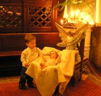
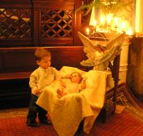

Born: at 3am
Weight: 3.8kg (8lb. 6oz.)
Length: 51cm
Head circumference: 36cm
Note on Second Names: We've been choosing second names from the birthday. Anthony was born on the feast of the Holy Innocents, which explains his unusual middle name.
Baptized on the 9th of January


Godparents: John and Jane Gresser

 
